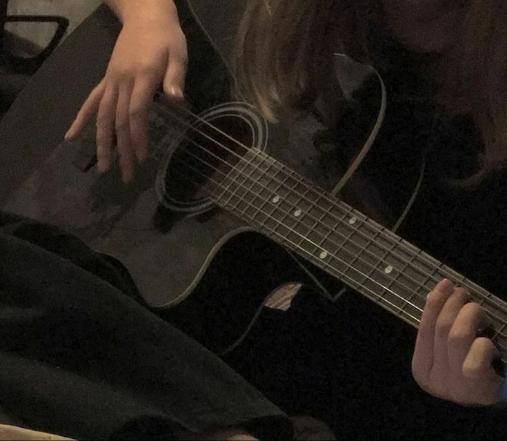
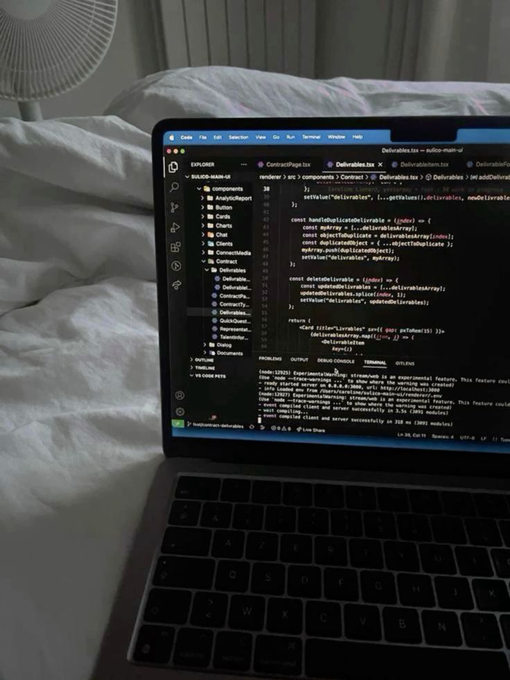

Hobi

Saya mulai belajar gitar pada saat baru masuk ekskul band .Saat itu saya melihat para
anggota gitarist jago banget main nya itu bener bener terlihat keren,
itu lah yang membuat saya menjadi tertarik kepada gitar dan sampai sekarang saya masih memainkan gitar
Favorite Lesson

Mata pelajaran yang paling saya suka itu saat sedang mapel produktif PEMROGRAMAN, di karenakan terkadang saat guru memberikan tugas yang cukup sulit saya bisa mendapatkan passive income dengan cara menawarkan diri iming iming membantu
Favorite Food

Nahh kalau makanan kesukaan saya tuh yaaa inii nasi goreng. gatau harus jelasin gimana pokok nya nasi goreng emang se enak ituu apalagi nasi goreng kampung yang ga di kasi kecap BEDEHHH sedap bangett!